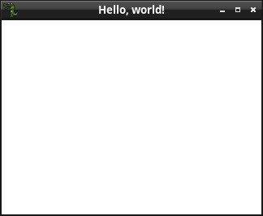

參考資訊：
https://www.raylib.com/
https://github.com/raysan5/raylib
main.c
#include <stdio.h>
#include <stdlib.h>
#include <allegro5/allegro.h>
int main(void)
{
ALLEGRO_DISPLAY *disp = NULL;
al_init();
disp = al_create_display(320, 240);
al_set_window_title(disp, "Hello, world!");
al_clear_to_color(al_map_rgb(255, 255, 255));
al_flip_display();
al_rest(30);
al_destroy_display(disp);
return 0;
}
編譯、測試
$ gcc main.c -o main `pkg-config --libs --cflags allegro-5 allegro_image-5` $ ./main
